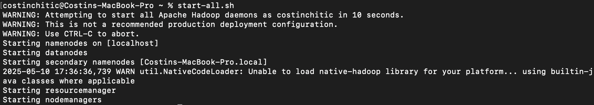
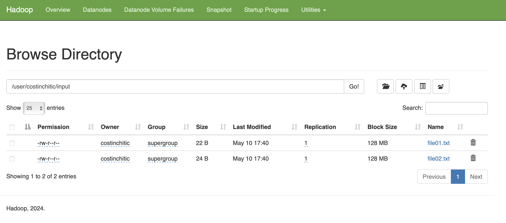
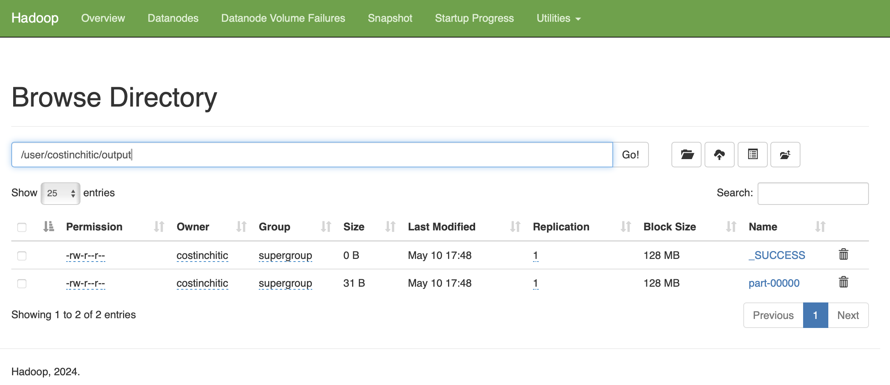
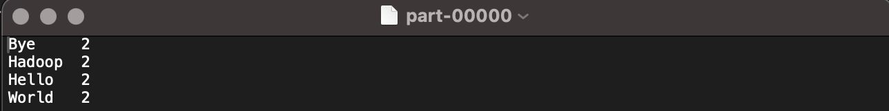
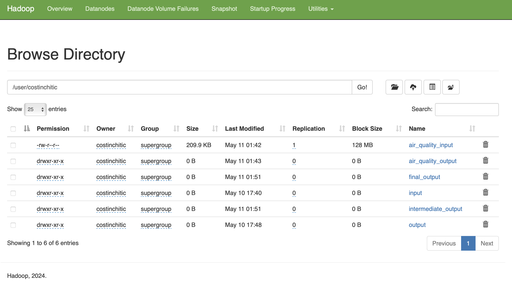
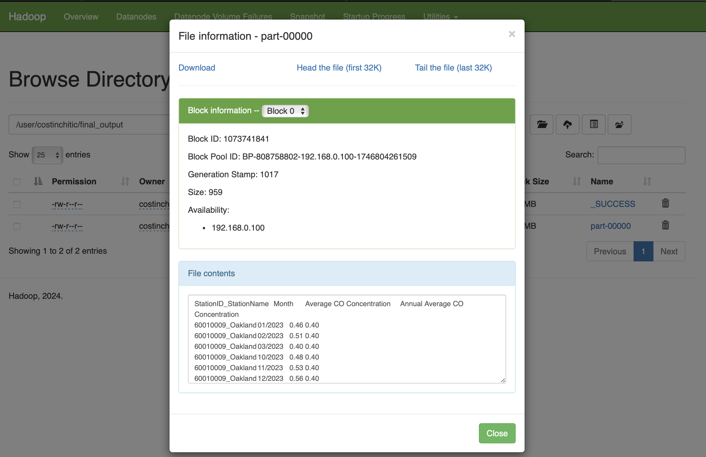

Installation for MacOS
source: https://medium.com/@MinatoNamikaze02/installing-hadoop-on-macos-m1-m2-2023-d963abeab38e
brew install hadoop
cd /opt/homebrew/Cellar/hadoop/3.4.1/libexec/etc/hadoopConfigure core-site.xml, hdfs-site.xml, mapred-site.xml, yarn-site.xml and hadoop-env.sh
brew install --cask adoptopenjdk8 // deprecated
brew install --cask temurin@8 // use this instead. It will install Rosetta 2 which is very hard to remove from MacOS. Not really important.
hadoop % export JAVA_HOME="/Library/Java/JavaVirtualMachines/temurin-8.jdk/Contents/Home"If start-all.sh throws an error like this Permission denied (publickey,password,keyboard-interactive) , then call ssh-keygen -t rsa -P '' -f ~/.ssh/id_rsa and cat ~/.ssh/id_rsa.pub >> ~/.ssh/authorized_keys
hadoop namenode -format
Start
start-all.sh
Anything should go wrong, just run
hadoop namenode -formatDon’t forget to stop it
stop-all.shUninstall
Hadoop
brew uninstall --ignore-dependencies hadoop
brew autoremove
brew cleanup --prune=all
rm -rf ~/hadoop ~/.hadoop
nano ~/.zshrc # or ~/.bashrc, and remove Hadoop-related exports
brew uninstall --force openjdk@11 mysql qemu python@3.13 gettext glib cairo
brew list ( and remove what we do not want )Temurin (java)
brew uninstall --cask temurin@8ssh-key
> ~/.ssh/authorized_keysMapReduce with Python
a.k.a. the main MISSION of this assignment
I created hadoop_test/ which contains mapper.py and reducer.py. I have two files file01.txt and file02.txt which got the following contents — echo "Hello World Bye World" > file01.txt, echo "Hello Hadoop Goodbye Hadoop" > file02.txt.
"""
mapper.py:
"""
#!/usr/bin/env python3
import sys
for line in sys.stdin:
for word in line.strip().split():
print(f"{word}\t1")
"""
reducer.py
"""
#!/usr/bin/env python3
import sys
current_word = None
current_count = 0
for line in sys.stdin:
word, count = line.strip().split("\t")
count = int(count)
if word == current_word:
current_count += count
else:
if current_word:
print(f"{current_word}\t{current_count}")
current_word = word
current_count = count
if current_word:
print(f"{current_word}\t{current_count}")I made both of them executables like this: chmod +x mapper.py reducer.py.
Run the Hadoop Streaming Job
hadoop fs -mkdir -p /user/costinchitic/input
hadoop fs -put file01.txt file02.txt /user/costinchitic/input
hadoop jar $HADOOP_HOME/share/hadoop/tools/lib/hadoop-streaming*.jar \
-input /user/costinchitic/input \
-output /user/costinchitic/output \
-mapper mapper.py \
-reducer reducer.py
From terminal:
costinchitic@Costins-MacBook-Pro hadoop_test % hdfs dfs -ls /user/costinchitic/input
Found 2 items
-rw-r--r-- 1 costinchitic supergroup 22 2025-05-10 17:40 /user/costinchitic/input/file01.txt
-rw-r--r-- 1 costinchitic supergroup 24 2025-05-10 17:40 /user/costinchitic/input/file02.txt
costinchitic@Costins-MacBook-Pro hadoop_test % hdfs dfs -ls /user/costinchitic/output
Found 2 items
-rw-r--r-- 1 costinchitic supergroup 0 2025-05-10 17:48 /user/costinchitic/output/_SUCCESS
-rw-r--r-- 1 costinchitic supergroup 31 2025-05-10 17:48 /user/costinchitic/output/part-00000
costinchitic@Costins-MacBook-Pro hadoop_test % hdfs dfs -cat /user/costinchitic/input/file01.txt
Hello World Bye World
costinchitic@Costins-MacBook-Pro hadoop_test % hdfs dfs -cat /user/costinchitic/input/file02.txt
Hello Hadoop Bye Hadoop
costinchitic@Costins-MacBook-Pro hadoop_test % hdfs dfs -cat /user/costinchitic/output/part-00000
Bye 2
Hadoop 2
Hello 2
World 2
After browsing to http://localhost:9870, I can view inside /user/costinchitic/input and output the files and the result!



Air Quality
Next, for the Air Quality application, I have a dataset from https://www.epa.gov/outdoor-air-quality-data/download-daily-data.
These are daily readings of CO concentration from 5 sites in California for the year 2023: Oakland, Oakland West, Laney College, Berkeley- Aquatic Park
The goal is to process the data from a csv/txt file and compute monthly averages, as well as filtering entries after some kind of pattern like average monthly CO concentration higher than annual averages.
I created \hadoop_co_avg where I put the .txt file, and the mapper.py and reducer.py. Again we have to call chmod +x mapper_co_avg.py reducer_co_avg.py
Filter Monthly
"""
mapper_co_avg.py
"""
#!/usr/bin/env python3
import sys
import csv
reader = csv.reader(sys.stdin)
for fields in reader:
if not fields or len(fields) < 8: # Skip empty or short rows
continue
if fields[0].startswith("Date"): # Skip header
continue
try:
station_id = fields[2]
station_name = fields[7]
date = fields[0]
co_value = float(fields[4])
date_parts = date.split("/")
if len(date_parts) < 3:
continue
month = date_parts[0].zfill(2)
year = date_parts[2]
month_year = f"{month}/{year}"
key = f"{station_id}_{station_name}_{month_year}"
print(f"{key}\t{co_value}")
except Exception:
continue
"""
reducer_co_avg.py
"""
#!/usr/bin/env python3
import sys
current_key = None
total = 0.0
count = 0
for line in sys.stdin:
key, value = line.strip().split('\t')
value = float(value)
if key == current_key:
total += value
count += 1
else:
if current_key:
avg = total / count
print(f"{current_key}\t{avg:.2f}")
current_key = key
total = value
count = 1
if current_key:
avg = total / count
print(f"{current_key}\t{avg:.2f}")Run the Hadoop Streaming Job
hdfs dfs -mkdir -p /user/costinchitic/air_quality_input
hdfs dfs -put air_quality/airquality.txt /user/costinchitic/air_quality_input
hadoop jar $HADOOP_HOME/share/hadoop/tools/lib/hadoop-streaming*.jar \
-input /user/costinchitic/air_quality_input \
-output /user/costinchitic/air_quality_output2 \
-mapper mapper_co_avg.py \
-reducer reducer_co_avg.py
After a successful run, we can see:
costinchitic@Costins-MacBook-Pro hadoop_co_avg % hdfs dfs -ls /user/costinchitic/air_quality_output
Found 2 items
-rw-r--r-- 1 costinchitic supergroup 0 2025-05-11 01:07 /user/costinchitic/air_quality_output/_SUCCESS
-rw-r--r-- 1 costinchitic supergroup 0 2025-05-11 01:07 /user/costinchitic/air_quality_output/part-00000
costinchitic@Costins-MacBook-Pro hadoop_co_avg % hdfs dfs -cat /user/costinchitic/air_quality_output/part-00000
StationID_StationName_Month Average CO Concentration
60010009_Oakland_01/2023 0.46
60010009_Oakland_02/2023 0.51
60010013_Berkeley- Aquatic Park_12/2023 0.76
...
Filter by monthly and annual averages
Filtering in this case is done by 2 steps of map reduce:
- Compute Monthly CO averages per station → intermediate output,
- Compute Annual CO average per station using intermediate output, and filter this file into a final output → monthly averages filtered.
"""
mapper1.py
"""
#!/usr/bin/env python3
import sys
import csv
reader = csv.reader(sys.stdin)
for fields in reader:
if not fields or len(fields) < 8:
continue
if fields[0].startswith("Date"):
continue
try:
station_id = fields[2]
station_name = fields[7]
date = fields[0]
co_value = float(fields[4])
date_parts = date.split("/")
if len(date_parts) < 3:
continue
month = date_parts[0].zfill(2)
year = date_parts[2]
month_year = f"{month}/{year}"
key = f"{station_id}_{station_name}_{month_year}"
print(f"{key}\t{co_value}")
except:
continue
"""
reducer1.py
"""
#!/usr/bin/env python3
import sys
current_key = None
sum_val = 0.0
count = 0
print("StationID_StationName_Month\tAverage CO Concentration")
for line in sys.stdin:
line = line.strip()
if not line or "\t" not in line:
continue
try:
key, value = line.split("\t")
value = float(value)
if key == current_key:
sum_val += value
count += 1
else:
if current_key:
print(f"{current_key}\t{sum_val / count:.2f}")
current_key = key
sum_val = value
count = 1
except:
continue
if current_key and count > 0:
print(f"{current_key}\t{sum_val / count:.2f}")
"""
mapper2.py
* Parses the generated intermediate output file with {StationID_StationName_Month,AvgCO} pairs
* Creates new key with StationID_StationNamefor
the reducer to add up and compute annual average for the station
* The values are the monthand the monthly CO concentration
"""
#!/usr/bin/env python3
import sys
for line in sys.stdin:
line = line.strip()
if not line or line.startswith("StationID_StationName_Month"):
continue
try:
key, value = line.split("\t")
station_id, station_name, month_year = key.split("_", 2)
co_value = float(value)
station_key = f"{station_id}_{station_name}"
print(f"{station_key}\t{month_year}_{co_value}")
except:
continue
"""
reducer2.py
• Takes the previously created mapping and creates a list of month/CO_value for every month on a station
• Computes the annual average from each monthly average
• Filter the months over the annual averages and outputs the Station, Month, Monthly Average and Annual Average
"""
#!/usr/bin/env python3
import sys
current_station = None
monthly_data = []
sum_val = 0.0
count = 0
print("StationID_StationName\tMonth\tAverage CO Concentration\tAnnual Average CO Concentration")
def emit_filtered():
if count == 0:
return
annual_avg = sum_val / count
for data in monthly_data:
month_year, co_val = data
if co_val >= annual_avg:
print(f"{current_station}\t{month_year}\t{co_val:.2f}\t{annual_avg:.2f}")
for line in sys.stdin:
line = line.strip()
if not line:
continue
try:
key, value = line.split("\t")
month_year, co_val = value.rsplit("_", 1)
co_val = float(co_val)
if key == current_station:
monthly_data.append((month_year, co_val))
sum_val += co_val
count += 1
else:
if current_station:
emit_filtered()
current_station = key
monthly_data = [(month_year, co_val)]
sum_val = co_val
count = 1
except:
continue
if current_station:
emit_filtered()# STEP 1: Monthly average
hadoop jar $HADOOP_HOME/share/hadoop/tools/lib/hadoop-streaming*.jar \
-input /user/costinchitic/air_quality_input \
-output /user/costinchitic/intermediate_output \
-mapper mapper_step1.py \
-reducer reducer_step1.py
# STEP 2: Annual filtering
hadoop jar $HADOOP_HOME/share/hadoop/tools/lib/hadoop-streaming*.jar \
-input /user/costinchitic/intermediate_output \
-output /user/costinchitic/final_output \
-mapper mapper_step2.py \
-reducer reducer_step2.py

